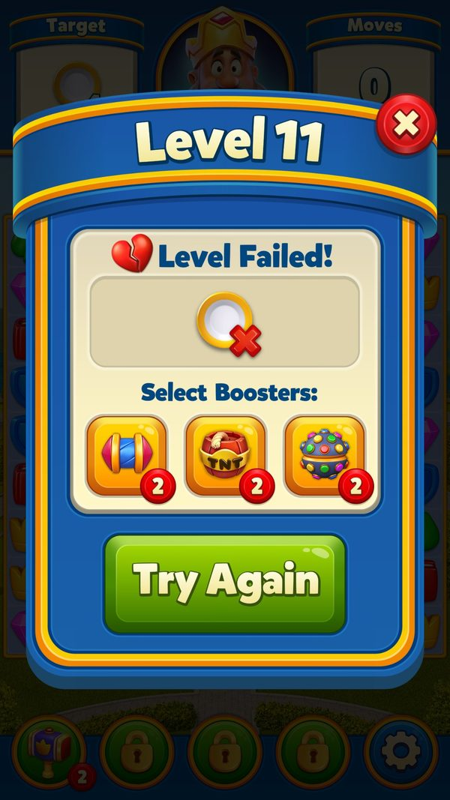
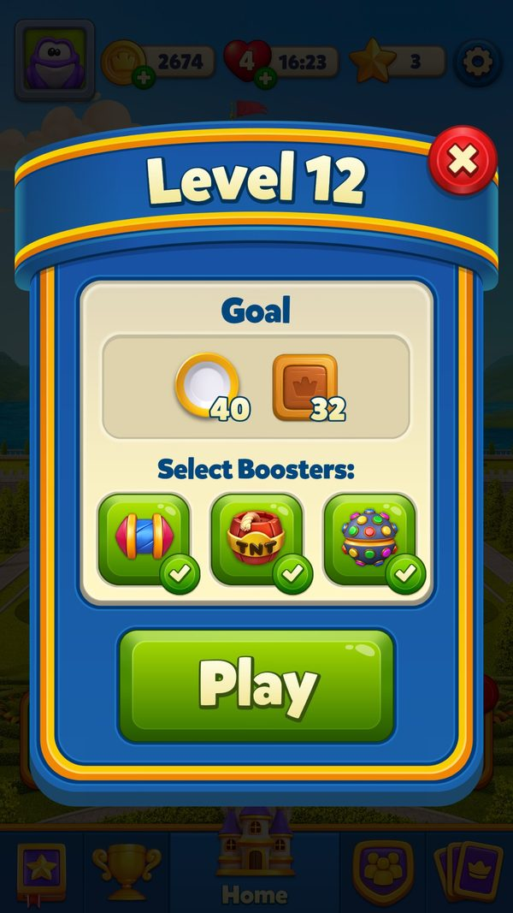
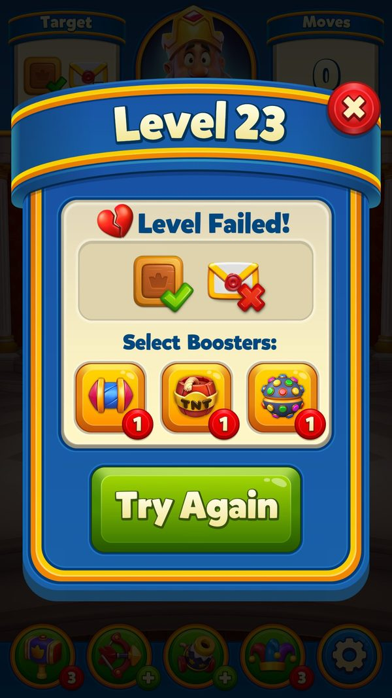
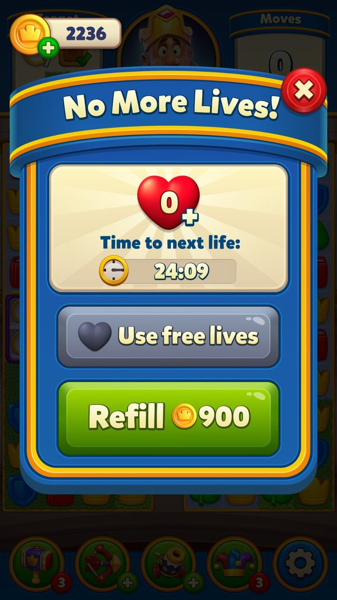
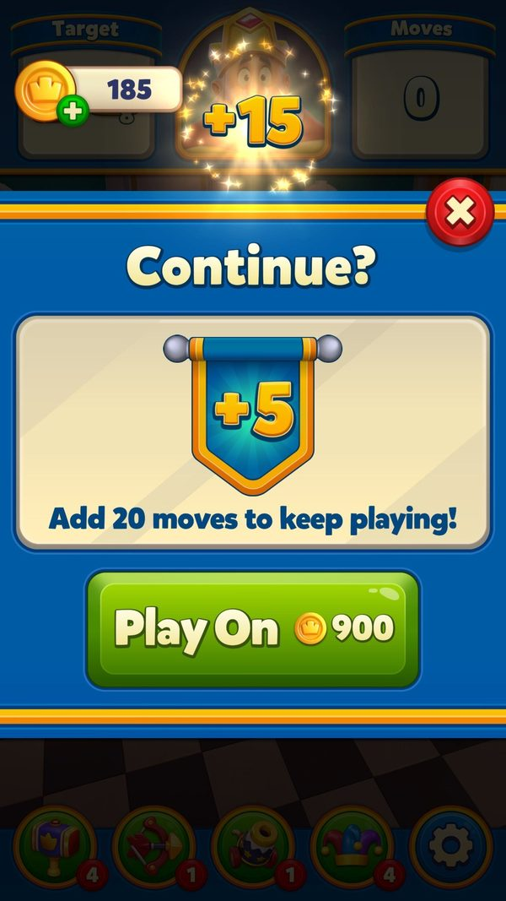

Kiếm tiền trong màn: Play On, booster, mạng, quảng cáo
Một lượt chơi đi qua những điểm bán nào, giá bao nhiêu và vòng 'thua sát nút → mua thêm lượt' được dựng ra sao.
Bài này đi theo một phiên chơi thật trên tài khoản test (level 11–12, LDPlayer, 06/10/2026): thua một lần vì từ chối Play On 900 coin, mất 1 mạng, thắng lại, rồi thắng level 12 với 3 booster trước màn. Sau đó giải thích từng điểm bán trong màn và luật giá đằng sau. Đọc khoảng 9 phút; nên đọc kèm bài Shop.
- ✅ Giá trị thật: lấy thẳng từ code, config server thật, save hoặc ảnh chụp khi chơi.
- 🧪 Ví dụ minh họa: con số đầu vào giả định để thấy cơ chế chạy; cách tính trong ví dụ là cách tính thật trong code.
- Tên kỹ thuật (class, method, key) để trong ngoặc hoặc ở dòng bằng chứng, để tra code khi cần.
Tóm tắt nhanh
- Hết lượt mà còn mục tiêu → popup mua thêm 5 lượt. Giá tăng mỗi lần mua trong cùng một ván.Ví dụ ✅ Level 11, lần đầu: 'Continue? Add 5 moves to keep playing!' — Play On 900 coin (ảnh 06/10). Code: lần 2 1.900 (+1 Rocket), lần 3 2.900, lần 4 3.900, từ lần 5 4.900 coin (+2 Light Ball).
- Coin kiếm được quá ít so với giá cứu ván. Đây là lý do người chơi phải nạp.Ví dụ ✅ Thắng level 11: +45 coin; level 12: +38 coin. Một lần Play On 900 coin bằng khoảng 20 trận thắng.
- Không mua thì thua và mất 1 mạng. Mạng hồi 30 phút mỗi mạng.Ví dụ ✅ Bấm X ở popup Play On → 'Level Failed!' → mạng 5 → 4; đồng hồ hồi mạng kế 18:23 ngay sau ván thắng tiếp theo.
- Refill mạng cũng 900 coin. Cùng mức 'một lần cứu' như Play On.Ví dụ ✅ Popup More Lives: 4 mạng, nút Free lives (xin đội) và Refill 900 coin.
- Booster mua theo bộ 3 bằng coin.Ví dụ ✅ Code: Rocket 900, TNT 1.500, Light Ball / Hammer / Jester 1.900, Arrow / Cannon 3.900 coin. Level 12 dùng cả 3 booster trước màn có sẵn (mỗi loại có 2).
- Thua nhiều lần cùng level thì được cộng nước miễn phí.Ví dụ ✅ Từ lần thứ 5 thấy popup Play On ở cùng một level: +5 nước mỗi gói, tối đa +30; thắng thì đếm lại.
- Thắng thì lượt dư đổi thành coin.Ví dụ ✅ Level 12 còn 8 lượt → pha 'Reward' biến lượt dư thành item nổ, bộ đếm coin bắt đầu từ 10 → tổng +38 coin.
Ví dụ xuyên suốt: một phiên chơi thật ở level 11–12
✅ Tài khoản test 2712389101, LDPlayer, 06/10/2026. Bắt đầu: level 11, 2.629 coin, 5 mạng (Full), 4 sao. Booster trước màn: Rocket, TNT, Light Ball mỗi loại 2; trong màn: Hammer 2, ba ô còn khoá.
| Lúc | Người chơi làm gì | Game phản hồi | Số dư |
|---|---|---|---|
| 1 | Bấm Level 11 | Hộp bắt đầu: Goal 40, chọn booster trước màn, nút Play | 2.629 coin · 5 mạng |
| 2 | Chơi, hết lượt khi còn mục tiêu | Banner hết lượt → popup 'Continue? Add 5 moves to keep playing!' — Play On 900 coin | Đủ coin để mua, nhưng không mua |
| 3 | Bấm X | 'Level Failed!' với chọn lại booster và nút Try Again ngay trên popup | Mạng 5 → 4 |
| 4 | Try Again, thắng level 11 | Banner thắng → về Home: nút sang Level 12, Area có chấm đỏ (đủ sao làm task) | 2.629 → 2.674 coin (+45) · sao 4 → 5 · vẫn 4 mạng |
| 5 | Bấm vào tim | Popup More Lives: 4 mạng, thời gian tới mạng kế 18:23, ít phút sau 17:52; nút Free lives và Refill 900 coin | Không mua |
| 6 | Bấm Level 12, chọn cả 3 booster trước màn | Hộp bắt đầu: Goal 40 đĩa + 32 thùng; 3 dấu tích xanh; vào màn có sẵn TNT, Light Ball, Rocket trên bàn | 2.674 coin · 4 mạng · 3 sao |
| 7 | Thắng level 12 với 8 lượt dư | Pha 'Reward': lượt dư thành item nổ, bộ đếm coin bắt đầu từ 10 → hộp 'Well Done!' +1 sao | +38 coin (≈ 2.712) · +1 sao |
Ở bước 2, 900 coin chỉ bằng 34% số dư (2.629) nên chưa thấy 'đau'. 🧪 Nếu đã mua và vẫn hết lượt, lần 2 tốn 1.900 coin: tổng 2.800 coin, vượt số dư 2.629 → game dẫn sang Shop. Lần 2 trong cùng một ván là điểm chuyển từ coin miễn phí sang tiền thật.







Ảnh chụp minh họa (9)
Ảnh chụp từ game thật trên LDPlayer. Bấm ảnh để phóng to, phím ← → để chuyển ảnh.







Luồng hoạt động (13 bước)
Tóm lại: Kiểm tra mạng → chọn booster trước màn → chơi, dùng booster trong màn → hết lượt: popup Play On (giá tăng mỗi lần) → mua bằng coin / quảng cáo / IAP, hoặc bỏ → thua: mất 1 mạng, mất chuỗi thắng → thắng: lượt dư thành coin, có thể xem quảng cáo ×5
- 1Vào level: kiểm tra mạngPlayerHết mạng thì phải chờ, xin đội, Refill bằng coin, xem quảng cáo hoặc mua offer có đầy mạng.Ví dụ ✅ More Lives ở 4 mạng: Free lives + Refill 900 coin. Code: Refill 1.900 coin ở bảng giá cao.
MoreLivesDialog.OnRefillClicked; MultiplierUtil.GetLifeRefillPrice (900 / 1900); AdManager.TryShowForLife - 2Chọn booster trước mànPlayerRocket, TNT, Light Ball được đặt sẵn lên bàn khi bắt đầu. Hết thì mua bộ 3 bằng coin.Ví dụ ✅ Level 12: chọn cả 3 → vào màn có sẵn TNT, Light Ball, Rocket. Code: bộ 3 Rocket 900, TNT 1.500, Light Ball 1.900 coin.
BoosterTypeExtension.Price / Amount = 3; PrelevelBoostersSlider - 3Nạp đạn và chuỗi thắngClientThắng 10 trận được nạp Super Light Ball; có thể mua nạp bằng coin theo nhóm A/B. Thắng 3 trận liên tiếp được quà quản gia (Cloche) từ level 32.Ví dụ ✅ Giá nạp Super Light Ball của tài khoản test (nhóm 6) = 1.900 coin.
SuperBoosterManager.SuperBoosterWinThreshold = 10 / GetAbCoinPrice; ClocheManager.DefaultMaxCloche = 3, ClocheUnlockLevel = 32 - 4Booster trong mànPlayerHammer, Arrow, Cannon, Jester mở dần theo level; mua bộ 3 bằng coin.Ví dụ ✅ Level 11: chỉ có Hammer (2), ba ô còn khoá. Code: Hammer / Jester 1.900, Arrow / Cannon 3.900 coin.
BoosterTypeExtension.GetUnlockLevel [8, 14, 17, 19]; Price - 5Hết lượt: popup Play OnClientBanner hết lượt trượt vào rồi popup mở; nút Play bật sau 0,5 giây để tránh bấm nhầm. Giá theo số lần đã hết lượt trong ván.Ví dụ ✅ Level 11 lần 1: Play On 900 coin, +5 lượt.
WinFailManager.StartEgoFlow; EgoManager.EgoShown / GetEgoPackage; EgoDialog.EgoButtonDelay = 0.5 - 6Cho thấy 'chỉ còn chút nữa'ClientTừ lần hết lượt thứ 3, popup hiện số mục tiêu còn lại trên bàn.Ví dụ 🧪 Lần 3 (2.900 coin): 'còn 4 đĩa' → người chơi thấy mình sát đích.
EgoManager.EgoShown (RemainingItemsCalculator.GetRemainingItemsOnBoard, currentStep > 2) - 7Các cách chơi tiếpPlayerTrả coin; xem quảng cáo (miễn phí, nếu nhóm có quảng cáo); slider offer; gói IAP cứu ván; hoặc mua pass ngay trong popup.Ví dụ ✅ Level 11 chỉ có nút Play On. 🧪 Level > 99: có thể thêm slider Royal Favor (50%), gói IAP 29.000₫ (chưa trả tiền), dải Royal Pass.
EgoDialog (nút Play 1, RoyalPass 4, Offer 5, EgoOffer 6, Shop 7, CoinShopEgoOffer 8, WeeklyPass 9, JourneyOffer 10, RewardedAdPlay 11) - 8Thiếu coin: sang Shop rồi quay lạiPlayerBấm thêm coin mở Shop; mua xong hay huỷ đều quay về đúng popup Play On.Ví dụ 🧪 Còn 1.729 coin ở lần 2 (cần 1.900) → mua Coin 1 59.000₫ (+1.000) → về popup → bấm Play On.
EgoPurchaseStrategy.SetTrigger ('Ego-N-AddCoins') / ShowEgoDialog
- 9Play On: trừ coin, cộng lượt, ném itemClientTrừ coin, đặt số lượt = 5 + nước thêm (nếu có), ném item của gói lên bàn, lưu ván ngay.Ví dụ 🧪 Gói lần 3 (2.900 coin): +5 lượt, 1 Rocket + 1 TNT rơi xuống bàn.
EgoManager.PlayOn / PutEgoItemsToGrid; MoveManager.SetMaxMoves; LevelSaveManager.SaveImmediate - 10Nước thêm khi thua nhiềuClientĐếm số lần thấy popup Play On ở cùng level; từ lần 5 mỗi lần +5 nước, tối đa +30.Ví dụ 🧪 Thua level 40 đến lần thứ 7 → gói Play On cho 5 + 15 = 20 lượt. Code: max(0, min(lần, 10) − 4) × 5. ✅ Trên máy 06/10: lần thứ 7 hết lượt ở level 23 → banner +5 cộng +15 = "Add 20 moves", giá vẫn 900 coin.
EgoExtraMovesHelper.CalculateAdditionalMoves (4 / 5 / 10) - 11Bỏ cuộc: cảnh báo rồi thuaPlayerDưới level 100 có cảnh báo lần hai; nếu sẽ mất chuỗi quà quản gia thì có cảnh báo riêng. Xác nhận thì thua, mất 1 mạng.Ví dụ ✅ Level 11: bấm X → Level Failed, Try Again; mạng 5 → 4.
EgoDialog.ExitAfterWarnings; EgoManager.SecondWarningRemoveLevel = 100; EgoManager.CancelOffer; LifeHelper.DecrementLives - 12Thua level cực khó: offer thứ haiClientTừ level 149, level cực khó có gói cứu riêng hiện một lần khi thua.Ví dụ 🧪 Thua level 160 → gói 29.000₫ (chưa trả tiền) hoặc 99.000₫ (đã trả).
ExtremelyHardLevelOfferHelper.ShouldShowAtFail - 13Thắng: lượt dư thành coinClientBộ đếm coin bắt đầu từ 10 (level Hard 100, Super Hard 150, Extremely 200); mỗi lượt dư thêm 2,5 coin. Có thể xem quảng cáo nhân ×5; quảng cáo xen kẽ (nếu nhóm có) bật sau màn.Ví dụ ✅ Level 12, 8 lượt dư → +38 coin. Công thức đọc được cho 10 + 2,5 × 8 = 30; 8 coin chênh chưa giải thích (có thể từ item nổ ở pha Reward, suy luận). 🧪 Xem quảng cáo ×5 → 38 × 5 = 190 coin.
RemainingMovesManager (DefaultInitialCoinAmount 10, RemainingMoveCoinValue 2.5); AdManager.TryShowForCoin (×5) / TryShowAfterLevelWin
Nhánh & ngoại lệ
| Khi | Thì | Ví dụ | Bằng chứng |
|---|---|---|---|
| Nhóm A/B '10 lượt' | Mỗi gói Play On cho 10 lượt; nước thêm tối đa +25. | ✅ Tài khoản test thấy +5 nên không ở nhóm này. | EgoManager.GetMoveCount (PriceChangeAbEgoMoveCount = 10); EgoExtraMovesHelper.FailIncrementLimitForPriceChangeAb = 9 |
| Đang chơi hạng x2 / x3 (Multiplier Selection) | Giá Play On theo bảng của hạng. | ✅ Nhóm 'high' hạng x3: 2.900 → 6.900 coin thay vì 900 → 4.900. | EgoManager.SetMultiplierSelectionAbEgoPriceValues |
| Bảng giá cao đang bật | Booster +1.000 coin mỗi bộ, Refill 1.900 coin. | 🧪 Rocket ×3: 900 → 1.900 coin. | BoosterTypeExtension.Price; MultiplierUtil.GetLifeRefillPrice |
| Quảng cáo chưa sẵn sàng hoặc mất mạng | Hiện chữ 'chưa có quảng cáo' hoặc popup mất kết nối; không thay được coin. | 🧪 Tắt wifi, bấm xem quảng cáo cứu ván → popup AdsNoConnectionDialog. | AdManager.TryShow (AdStartState); get_ShouldShowNoConnectionDialog |
| Game bị tắt giữa lúc mua Play On | Khôi phục đúng bước; nếu ván bị huỷ thì hoàn coin. | 🧪 Mua 1.900 coin rồi crash, ván bị huỷ → được hoàn 1.900 coin. | EgoManager.RestoreFromSaveData; LevelRestoreManager.TryRefundLevelSpending |
| Đã mua No-Ads | Hết quảng cáo xen kẽ; quảng cáo có thưởng vẫn dùng được (suy luận). | 🧪 Mua No-Ads 249.000₫ → không còn quảng cáo sau màn, vẫn xem được quảng cáo ×5 coin. | AdManager.ShouldShowAdForUser; InGameAdsProgress.IsOfferPurchasedIndex |
| Người quay lại sau ≥ 15 ngày | 25 level đầu được cộng sẵn nước, nên ít gặp popup Play On. | ✅ Bậc 2: +10 nước ở 5 level đầu. | WelcomeBackGiftManager.GetExtraMoveCount |
Bảng giá các điểm bán trong màn
Tóm lại: Play On 900 → 4.900 · Refill 900 · booster 900–3.900 cho 3 cái · quảng cáo miễn phí nếu có
| Điểm bán | Giá thường | Bảng cao / A/B | Nhận được | Ví dụ |
|---|---|---|---|---|
| Play On lần 1 | 900 coin | x2: 1.500 / 1.900; x3: 1.900 / 2.900 | 5 lượt | ✅ Ảnh level 11 |
| Play On lần 2 | 1.900 coin | x3 high: 3.900 | 5 lượt + 1 R | 🧪 Tổng 2 lần: 2.800 coin |
| Play On lần 3 | 2.900 coin | x3 high: 4.900 | 5 lượt + 1 R + 1 T | 🧪 Từ lần này thấy số mục tiêu còn lại |
| Play On lần 4 | 3.900 coin | x3 high: 5.900 | 5 lượt + 1 T + 1 L | - |
| Play On lần 5 trở đi | 4.900 coin | x3 high: 6.900 | 5 lượt + 2 L | 🧪 Cứu 5 lần: 14.500 coin |
| Refill mạng | 900 coin | 1.900 | Đầy mạng | ✅ Ảnh More Lives |
| Rocket ×3 | 900 coin | 1.900 |  3Rocket 3Rocket | - |
| TNT ×3 | 1.500 coin | 2.500 |  3TNT 3TNT | - |
| Light Ball / Hammer / Jester ×3 | 1.900 coin | 2.900 |  3Light Ball / 3 H / 3 J 3Light Ball / 3 H / 3 J | - |
| Arrow / Cannon ×3 | 3.900 coin | 4.900 | - | |
| Nạp Super Light Ball | 1.900 coin (nhóm 6) | nhóm 2..7: 4.900 → 900 | Super Light Ball | ✅ Nhóm của tài khoản test |
| Gói IAP cứu ván | 29.000 / 49.000₫ (chưa trả tiền) | 199.000 / 214.000₫ (đã trả) | (nội dung chưa đọc được) | ✅ Level 11 chưa hiện |
| Quảng cáo có thưởng | 0 | level bắt đầu và cooldown theo nhóm (server, chưa đọc được) | Mạng / ×5 coin / chơi tiếp | - |
Vòng 'thua sát nút → mua thêm lượt'
Tóm lại: rẻ lúc còn hy vọng → hiện mục tiêu còn lại → đắt dần nhưng tặng item → bỏ thì mất mạng và chuỗi thắng → thua nhiều thì được nước thêm
- Lần đầu rẻ nhất, đúng lúc người chơi tin mình chỉ cần vài nước.Ví dụ ✅ 900 coin, xấp xỉ gói Shop nhỏ nhất (1.000 coin, 59.000₫).
- Từ lần 3 biến tiếc nuối thành con số.Ví dụ 🧪 'Còn 2 thùng' ở giá 2.900 coin: rất khó bấm X.
- Đắt dần nhưng có thêm đồ thật. Item ném xuống làm tăng cơ hội thắng.Ví dụ ✅ Lần 5: 4.900 coin kèm 2 Light Ball.
- Bỏ cuộc được làm cho 'đau'. Mất 1 mạng (30 phút chờ), mất chuỗi quà quản gia, dưới level 100 còn cảnh báo lần hai.Ví dụ ✅ Level 11: mạng 5 → 4 ngay khi bỏ Play On.
- Nhưng không vắt kiệt. Thua nhiều lần cùng level thì được nước thêm, và độ khó động nhận tín hiệu thua.Ví dụ ✅ Lần thứ 10 trở đi: +30 nước mỗi gói.
Số liệu chính
| Chỉ số | Giá trị | Số liệu do | Nguồn |
|---|---|---|---|
| Play On lần 1 | 900 coin, +5 lượt | Đo trên máy | ego_continue_900.jpg |
| Giá Play On 5 lần | 900 / 1.900 / 2.900 / 3.900 / 4.900 coin | Client | EgoManager..cctor (EgoPackages) |
| Coin mỗi trận thắng | +45 (level 11), +38 (level 12, 8 lượt dư) | Đo trên máy | feature_extras.json LevelFlow |
| Mạng sau 1 lần thua | 5 → 4 | Đo trên máy | feature_extras.json Lives |
| Refill mạng | 900 coin (bảng cao 1.900) | Đo trên máy / Client | lives_more_lives_refill.jpg; MultiplierUtil.GetLifeRefillPrice |
| Hồi mạng | 30 phút mỗi mạng; tối đa 5 (8 với pass) | Client | LifeHelper |
| Nước thêm khi thua nhiều | +5 mỗi lần từ lần 5, tối đa +30 (A/B +25) | Client | EgoExtraMovesHelper; đo trên máy: lần 7 = +15 (ego_continue_plus20_7th_time.jpg) |
| Coin cuối ván | bắt đầu 10 (Hard 100 / Super Hard 150 / Extremely 200) + 2,5 mỗi lượt dư | Client | RemainingMovesManager |
| Quảng cáo ×coin | ×5 | Client | AdManager.RewardedAdForCoinMultiplier |
| Nạp Super Light Ball (tài khoản test) | 1.900 coin (nhóm 6) | Server | super-charge-config.txt; ab_tests_runtime.json |
| Booster mở ở level 11 | 3 booster trước màn + Hammer; 3 ô khoá | Đo trên máy | level11_board.jpg |
Đánh giá
Thang 1–5 (với tiêu chí rủi ro, 5 = rủi ro cao). Trung bình: 4.0.
| Tiêu chí | Điểm | Nhận xét |
|---|---|---|
| Sức ép chi tiêu | 5/5 | Play On 900 → 4.900 coin trong khi một trận thắng chỉ +38–45 coin (5 = áp lực mạnh). |
| Chống bực bội | 4/5 | Nước thêm tới +30, bỏ cảnh báo kép từ level 100, hoàn coin khi ván bị huỷ. |
| Minh bạch | 4/5 | Giá và số lượt ghi rõ trên nút (✅ 'Add 5 moves', 900). Bảng giá theo hạng / A/B thì người chơi không biết trước. |
| Lối thoát không trả tiền | 3/5 | Có xin đội, quảng cáo (tuỳ nhóm), chờ hồi mạng; nhưng coin miễn phí chỉ đủ cho lần Play On đầu. |
| Rủi ro cảm giác bị ép | 4/5 | Mất mạng + mất chuỗi quà + giá leo trong một ván dễ tạo cảm giác bị giữ lại. |
- Mỗi gói Play On sau đều có item thật, nên tiền bỏ ra tăng cơ hội thắng, không chỉ thêm thời gian.
- Nước thêm theo số lần thua cùng level giảm bỏ game ở level khó mà không phải hạ độ khó cố định.
- Mọi đường mua từ popup Play On đều quay về đúng popup; ván đang chơi không bị mất.
- Coin miễn phí quá ít so với giá cứu ván (khoảng 20 trận thắng cho một lần 900 coin).
- Khi đủ điều kiện, popup hết lượt rất đông (Play On, quảng cáo, Royal Favor, gói IAP, Coin Shop, Pass, Weekly, Journey).
- Không thấy trần số lần mua Play On mỗi ván: người dễ bốc đồng có thể chi 14.500 coin cho một màn.
- Cảnh báo mất chuỗi quà quản gia đặt cạnh nút trả tiền có thể bị coi là dark pattern.
- Game tương tự: giữ thang Play On 4–5 bậc có item tặng, hiện mục tiêu còn lại từ lần 2–3, thêm nước miễn phí theo số lần thua cùng level.
- Đặt trần 5 lần Play On mỗi ván; từ lần 4 gợi ý 'chơi lại với booster' thay vì bán tiếp.
- Nâng coin thắng ở level khó (ví dụ +100 thay vì ~45) để người không trả tiền có ít nhất 1 lần Play On mỗi khoảng 10 level.
Liên quan
Mua thêm nước (Ego) Booster Super Booster (Super Lightball) Mạng (Lives) Cloche (Butler's Gift) Quảng cáo (Ads) Luồng chơi level (LevelFlow) Độ khó level (Difficulty) Chọn hệ số level (Multiplier) UI trong level Quà quay lại (Welcome Back) 📊 Shop và bảng giá IAP 📊 Cá nhân hoá offer theo người chơi 📊 Khung offer: nhận cấu hình, xếp chỗ, bật popup 📊 Royal Pass và Weekly Pass 📊 Offer gắn tiến trình, đội và người quay lại 📊 Madness (Book of Treasure / Propeller Madness) và các lớp nhân điểm sự kiện 📊 A/B test: chia nhóm, đọc nhóm và 52 thí nghiệm trên một tài khoản 📊 Độ khó động và phân khúc người chơi
Nguồn đã đọc
feature_extras.json (Ego, Lives, LevelFlow, Boosters observed) và screenshots level11_*.jpg, level12_*.jpg, ego_continue_900.jpg, lives_more_lives_refill.jpg, home_after_win_level11.jpg — LDPlayer 06/10/2026gdd/Ego.jsongdd/Boosters.jsongdd/SuperBooster.jsongdd/Lives.jsongdd/Cloche.jsongdd/Ads.jsongdd/LevelFlow.jsongdd/Difficulty.jsonMoreLivesDialog.OnRefillClicked + MultiplierUtil.GetLifeRefillPrice (pseudo-C)appendix/static-arrays.md (EgoManager..cctor: LowEgoPrices / HighEgoPrices)facts/runtime/cdn_configs/super-charge-config.txtfacts/runtime/server_configs/ab_tests_runtime.json